32. Max for Live Devices
Live comes with a selection of custom-designed, built-in Max for Live devices. These devices include instruments, effects, and MIDI Tools.
If you use the Suite edition or the Standard edition with the Max for Live add-on, Max for Live devices can be opened in Max. This means you can edit and customize them in the Max editor — unlike native Live devices.
For more information about editing devices in Max, check out the Editing Max for Live Devices and Building Max for Live MIDI Tools sections.
To learn the basics of using devices in Live, check out the Working with Instruments and Effects chapter.
Note that different editions of Live have different feature sets, so some devices covered in this reference may not be available in all editions.
32.1 Max for Live Instruments
32.1.1 DS Clang
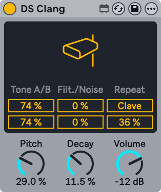
DS Clang consists of two tones, white noise, and a filter. It can produce a variety of cowbell, clave, and noise percussion sounds.
The Tone A/B sliders let you set the volume for each cowbell tone independently.
The Filter control sets the high-pass and band-pass filter cutoff, allowing you to change the color of the sound. At higher values, the signal has more high-frequency content.
The Noise slider allows you to set the amount of white noise applied to the signal.
When the Clave switch is activated, you can add repeats to the clave sound using the Repeat slider.
You can use the Pitch parameter to change the pitch of the instrument. The Decay knob sets the length of the sound, while the Volume control adjusts the overall level of the instrument.
To preview the sound of the instrument with its current settings, click anywhere in the upper half of the display.
32.1.2 DS Clap
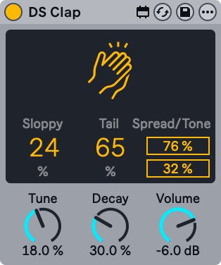
DS Clap is a mix of filtered noise and an impulse running through panned delay lines. You can use it to create a range of sounds from a tight electronic clap to a more organic, humanized handclap.
The Sloppy control sets the delay time between the two delay lines. Use this to adjust how tightly or loosely the panned claps align. Tail adds filtered noise to the impulse of the clap.
The Spread slider sets the stereo width of the clap. 0% yields a mono signal, while 100% creates a widened stereo image. The Tone slider adjusts the color of the clap. At higher values, the signal has more high-frequency content.
You can use the Tune parameter to change the pitch of the clap. The Decay knob sets the length of the clap, while the Volume control adjusts the overall level of the instrument.
To preview the sound of the instrument with its current settings, click anywhere in the upper half of the display.
32.1.3 DS Cymbal
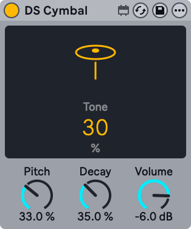
DS Cymbal combines sine and pulse waveforms with high-passed noise, making it possible to recreate a variety of timbres, from a thin ride cymbal to a heavy crash.
The Tone slider in the display sets the high-pass filter cutoff, allowing you to change the color of the cymbal. At higher values, the signal has more high-frequency content.
You can use the Pitch parameter to change the pitch of the cymbal. The Decay knob sets the length of the cymbal, while the Volume control adjusts the overall level of the instrument.
To preview the sound of the instrument with its current settings, click anywhere in the upper half of the display.
32.1.4 DS FM
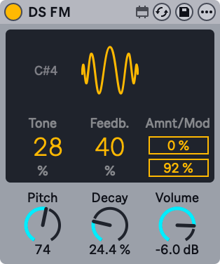
Inspired by a classic Japanese FM synthesizer, DS FM lets you create a variety of effects, from static bursts to metallic lasers.
The Tone slider in the display sets the low-pass filter cutoff, allowing you to change the color of the drum. At higher values, the signal has more high-frequency content.
Feedb. adjusts the amount of feedback applied to the FM algorithm. Greater values yield more noise.
Amnt sets the amount of FM modulation, while the Mod slider blends between different modulation types.
The Pitch parameter provides global pitch control. The Decay knob sets the length of the drum, while the Volume control adjusts the overall level of the instrument.
To preview the sound of the instrument with its current settings, click anywhere in the upper half of the display.
32.1.5 DS HH
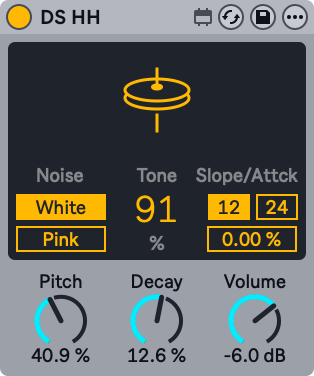
DS HH is a blend of noise and sine waveforms, with which you can produce any number of sounds, from sharp closed hats to sizzling open hats.
The Noise toggle lets you choose between two noise types: white or pink.
The Tone slider in the display sets the high-pass filter cutoff, allowing you to change the color of the hat. At higher values, the signal has more high-frequency content.
The pitched portion of the sound is filtered through a resonant high-pass filter. The filter can be switched between 12 and 24 dB slopes, and the attack time can be set via the Attack slider.
You can use the Pitch parameter for global pitch control. The Decay knob sets the length of the hat, while the Volume control adjusts the overall level of the instrument.
To preview the sound of the instrument with its current settings, click anywhere in the upper half of the display.
32.1.6 DS Kick
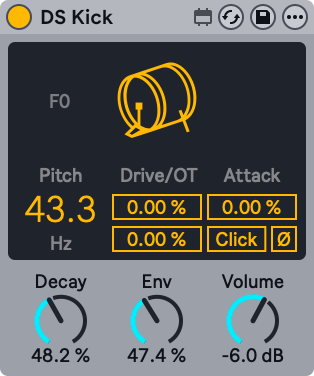
DS Kick is a kick drum synth with a modulated sine wave.
The Pitch slider lets you tune the kick in Hz. You can shape the kick sound by adding distortion via the Drive slider, or adding harmonics using the OT slider.
The Attack parameter smooths the sound of the sine wave. The Click switch adds a click sound to the kick, creating a sharper transient.
The Decay knob sets the length of the kick. Env can be used to set the pitch modulation. The Volume control adjusts the overall level of the instrument.
To preview the sound of the instrument with its current settings, click anywhere in the upper half of the display.
32.1.7 DS Snare
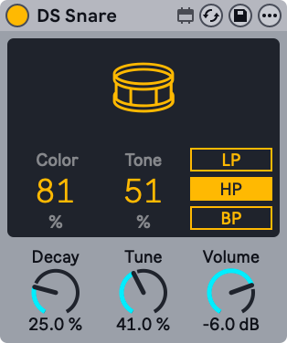
DS Snare consists of a pitched oscillator and noise and can produce sounds ranging from a traditional acoustic snare to the gated noise snare often heard in electronic dance music.
The Color parameter controls the tone of the pitched signal, while the Tone parameter controls the presence of the noise signal.
You can apply one of three different filter types to the noise signal: low-pass, high-pass, or band-pass.
The Decay knob sets the length of the snare, while the Tune parameter provides global pitch control. The Volume control adjusts the overall level of the instrument.
To preview the sound of the instrument with its current settings, click anywhere in the upper half of the display.
32.1.8 DS Tom
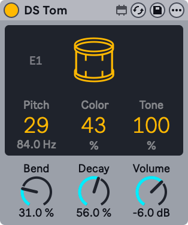
DS Tom combines an impulse with various pitched oscillator waveforms, allowing you to synthesize toms with various timbral qualities, from deep and thunderous to sharp and tappy.
You can use the Pitch slider to tune the tom in Hz. The Color parameter controls the filter gain and cutoff, while the Tone slider controls the level of resonant band-pass filters to mimic the tuning of the drum membrane.
The Bend parameter adjusts the pitch envelope. The Decay knob sets the length of the tom, while the Volume control adjusts the overall level of the instrument.
To preview the sound of the instrument with its current settings, click anywhere in the upper half of the display.
32.2 Max for Live Audio Effects
32.2.1 Align Delay
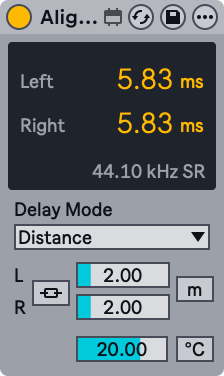
Align Delay is a utility device that delays incoming signals in samples, milliseconds, or meters/feet.
Using the Delay Mode drop-down menu, you can choose between three delay modes: Time, Samples, and Distance.
Time mode sets the delay in milliseconds and can be used to align audio with A/V equipment or create subtle stereo widening.
Samples mode sets the delay in samples and can be used to compensate for latency introduced by other devices.
Distance mode sets the delay in meters or feet and can be used to correct timing offsets caused by physical distances between components in a PA system.
There is also a Temperature option for Distance mode, which includes a toggle for selecting Celsius or Fahrenheit and a slider for setting the temperature. Matching these to the current temperature in the room results in more precise timing as sound travels differently in warm and cold environments.
Activate the Link L/R toggle to apply the left channel’s delay settings to the right channel. When enabled, the Delay Right slider is grayed out, and adjusting the Delay Left slider affects both channels.
32.2.2 Envelope Follower
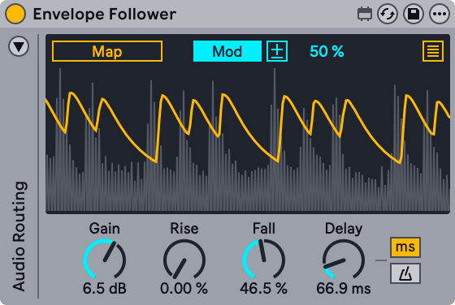
Envelope Follower is a modulator device that captures the amplitude of an incoming signal and shapes it into a continuous curve. This curve can then be used to control mapped parameters. The auto-wah effect is a common application of envelope following.
You can map any automatable parameter in Live to Envelope Follower, such as device or mixer parameters. To do so, activate the Map button and click a parameter to assign it as a mapping target.
Use the Show/Hide Multimap button at the top right of the display to access additional mapping buttons. You can map up to eight parameters in total.
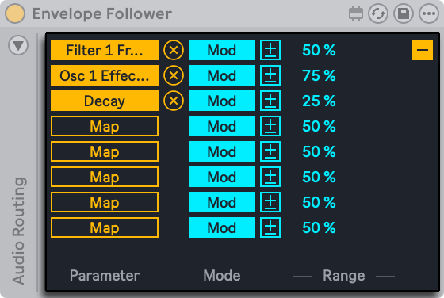
To unassign a parameter, click the Unmap button to the right of the Map button.
Envelope Follower can control mapped parameters in two different ways: Modulation and Remote Control. Modulation is selected by default, but you can use the Mod toggle to switch to Remote Control.
When Modulation is enabled, parameter values can be freely adjusted even after they are mapped. The Modulation Polarity toggle switches between the Bipolar and Unipolar modes. In Bipolar mode, modulation occurs in both directions with the base value at the center. In Unipolar mode, modulation is applied in a single direction from the base value. Use the Modulation Amount slider to set the modulation depth. This determines the modulation range relative to the base value.
When Remote Control is enabled, parameter values are determined solely by Envelope Follower and cannot be changed manually. Use the Min and Max sliders to scale the modulation range.
You can use the Gain knob to set the gain applied to the incoming signal. The Rise parameter smooths the attack of the envelope, while the Fall control smooths the release of the envelope. These controls can be used to refine the envelope’s shape.
The Delay control sets the delay time of the envelope. You can switch between time-based delay and tempo-synced beat divisions with the Delay Mode buttons.
Envelope Follower uses the track’s input signal to generate the envelope by default. You can enable sidechain routing to use an external signal from a different track instead. For example, you can sidechain the signal from a Drum Rack to create rhythmic ducking or gating effects.
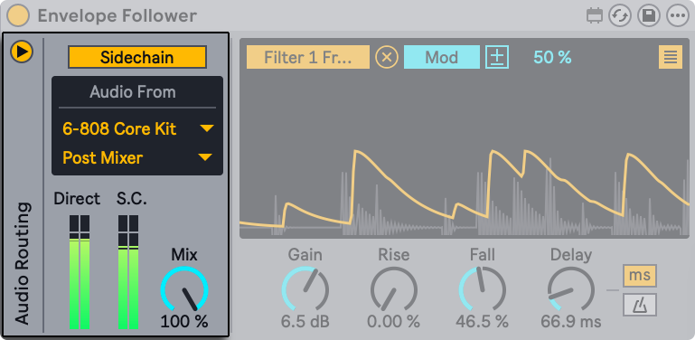
You can use the triangle toggle at the top left of the device to expand the Audio Routing panel and access the sidechain controls.
To set up sidechain routing, activate the Sidechain toggle and select the audio source via the first drop-down menu in the Audio From section. Use the second drop-down menu to choose whether the signal is received Pre FX, Post FX, or Post Mixer. You can also select the exact input channel when using Racks.
The Direct and S.C. meters display the current level of the track input and the external sidechain signal, respectively.
You can set the blend between the track input and the external sidechain signal via the Sidechain Mix control. At 0%, only the track input is used to generate the envelope; at 100%, only the external sidechain signal is used.
32.2.3 LFO
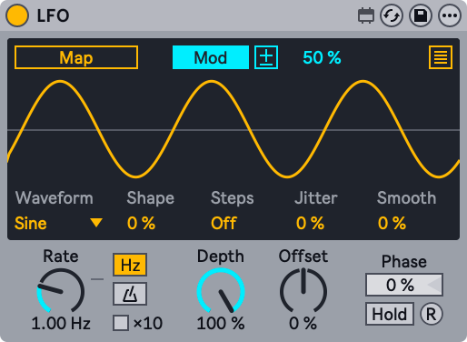
LFO is a modulator device that controls mapped parameters using low-frequency oscillation.
You can map any automatable parameter in Live to LFO, such as device or mixer parameters. To do so, activate the Map button and click a parameter to assign it as a mapping target.
Use the Show/Hide Multimap button at the top right of the display to access additional mapping buttons. You can map up to eight parameters in total.
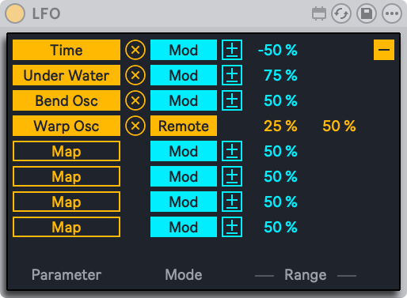
To unassign a parameter, click the Unmap button to the right of the Map button.
LFO can control mapped parameters in two different ways: Modulation and Remote Control. Modulation is selected by default, but you can use the Mod toggle to switch to Remote Control.
When Modulation is enabled, parameter values can be freely adjusted even after they are mapped. The Modulation Polarity toggle switches between the Bipolar and Unipolar modes. In Bipolar mode, modulation occurs in both directions with the base value at the center. In Unipolar mode, modulation is applied in a single direction from the base value. Use the Modulation Amount slider to set the modulation depth. This determines the modulation range relative to the base value.
When Remote Control is enabled, parameter values are determined solely by LFO and cannot be changed manually. Use the Min and Max sliders to scale the modulation range.
Use the Waveform drop-down menu to select one of nine waveforms: Sine, Up, Down, Triangle, Square, Random, Bin, Stray, and Glider.
The Shape control bends or skews the shape of the LFO waveform, while the Steps slider adds up to 24 steps to the waveform. Note that certain waveforms cannot be shaped or stepped due to how their values are generated. Therefore, the Shape control is grayed out when Random, Bin, Stray, or Glider is selected, and the Steps control is grayed out when Random, Bin, or Square is selected.
The Jitter slider adds randomness to the LFO output, while the Smooth control softens any sharp changes in the output, including those from applied jitter.
The Rate control sets the LFO rate. Use the Time Mode toggles to switch between frequency values in Hertz and tempo-synced beat divisions. When Hz is selected, you can enable the ×10 button to multiply the frequency value.
Depth sets the amount of modulation for all mapped parameters. At 0%, no modulation is applied, while at 100% the LFO output is applied at its maximum level.
The Offset control adjusts the center point of the LFO output. At 0%, the output is centered. Positive values shift the output upward, while negative values shift it downward. The horizontal line in the display indicates the center and can be a helpful visual reference when adjusting Offset.
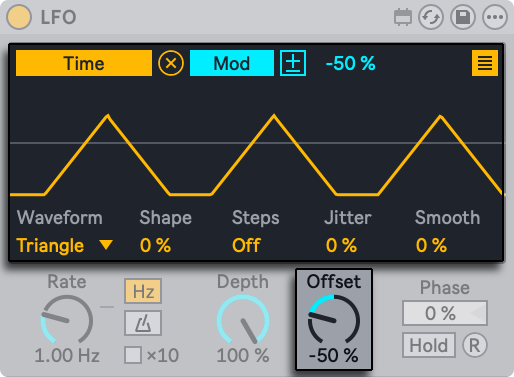
The Phase slider shifts the position of the LFO within its cycle from 0% (the start of the cycle) to 100% (the end).
To freeze the LFO output at its current value, activate the Hold toggle. Disable Hold to restart the LFO from the previously held value.
Click the R (Retrigger) button to retrigger the LFO from the position defined by the Phase control.
32.2.4 Shaper
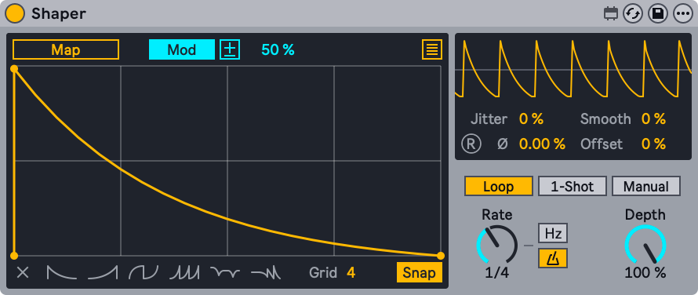
Shaper is a modulator device that uses a breakpoint envelope to generate mappable modulation data.
You can map any automatable parameter in Live to Shaper, such as device or mixer parameters. To do so, activate the Map button and click a parameter to assign it as a mapping target.
Use the Show/Hide Multimap button at the top right of the display to access additional mapping buttons. You can map up to eight parameters in total.
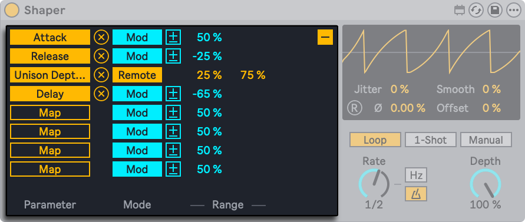
To unassign a parameter, click the Unmap button to the right of the Map button.
Shaper can control mapped parameters in two different ways: Modulation and Remote Control. Modulation is selected by default, but you can use the Mod toggle to switch to Remote Control.
When Modulation is enabled, parameter values can be freely adjusted even after they are mapped. The Modulation Polarity toggle switches between the Bipolar and Unipolar modes. In Bipolar mode, modulation occurs in both directions with the base value at the center. In Unipolar mode, modulation is applied in a single direction from the base value. Use the Modulation Amount slider to set the modulation depth. This determines the modulation range relative to the base value.
When Remote Control is enabled, parameter values are determined solely by Shaper and cannot be changed manually. Use the Min and Max sliders to scale the modulation range.
You can create a breakpoint by clicking anywhere in the display. Hold the Alt (Win) / Option (Mac) key while dragging between breakpoints to create curved segments. Hold Shift and click a breakpoint to delete it.
To remove the entire envelope from the display, press the Clear button in the bottom left corner. To the right of the Clear button, you can choose from one of six presets to quickly create a new breakpoint envelope.
Use the Grid slider to adjust the number of grid divisions in the display. When Snap is enabled, any breakpoints that you create or reposition will automatically snap to the nearest grid line.
The smaller display at the top right of the device provides an oscilloscope-style view of the envelope’s output signal.
The Jitter slider adds randomness to the envelope output, while the Smooth control softens any sharp changes in the output, including those from applied jitter.
The Phase control shifts the position of the envelope output within its cycle from 0% (the start of the cycle) to 100% (the end). Click the R (Retrigger) button to retrigger the envelope output from the position defined by Phase. Note that the Retrigger button is grayed out when the Time Mode is set to Sync.
The Offset control adjusts the center point of the envelope output. At 0%, the output is centered. Positive values shift the output upward, while negative values shift it downward. The horizontal line in the oscilloscope display indicates the center and can be a helpful visual reference when adjusting Offset.
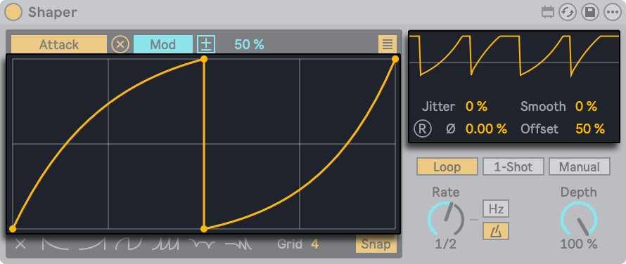
Shaper has three trigger modes: Loop, 1-Shot, and Manual. You can use the corresponding toggles to switch between these modes.
- Loop — The envelope loops continuously at the rate set by the Rate control.
- 1-Shot — The envelope can be triggered once using the mappable T button.
- Manual — The envelope can be scrubbed forward and backward with the Manual control.
The Rate control sets the envelope rate. Use the Time Mode toggles to switch between frequency values in Hertz and tempo-synced beat divisions.
Depth sets the amount of modulation for all mapped parameters. At 0%, no modulation is applied, while at 100% the envelope output is applied at its maximum level.
32.3 Max for Live MIDI Effects
32.3.1 Envelope MIDI
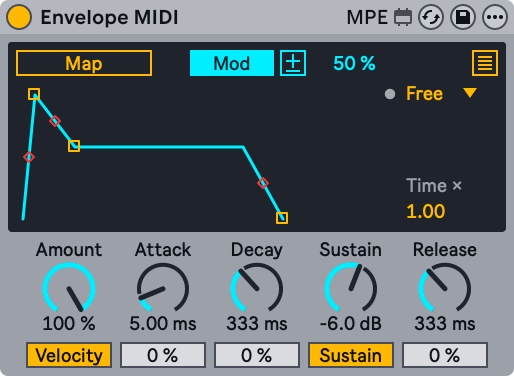
Envelope MIDI is a modulator device that uses an ADSR envelope to control mapped parameters.
You can map any automatable parameter in Live to Envelope MIDI, such as device or mixer parameters. To do so, activate the Map button and click a parameter to assign it as a mapping target.
Use the Show/Hide Multimap button at the top right of the display to access additional mapping buttons. You can map up to eight parameters in total.
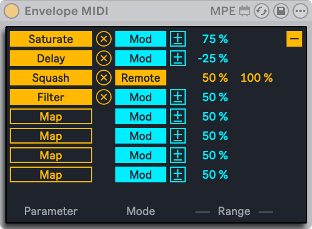
To unassign a parameter, click the Unmap button to the right of the Map button.
Envelope MIDI can control mapped parameters in two different ways: Modulation and Remote Control. Modulation is selected by default, but you can use the Mod toggle to switch to Remote Control.
When Modulation is enabled, parameter values can be freely adjusted even after they are mapped. The Modulation Polarity toggle switches between the Bipolar and Unipolar modes. In Bipolar mode, modulation occurs in both directions with the base value at the center. In Unipolar mode, modulation is applied in a single direction from the base value. Use the Modulation Amount slider to set the modulation depth. This determines the modulation range relative to the base value.
When Remote Control is enabled, parameter values are determined solely by Envelope MIDI and cannot be changed manually. Use the Min and Max sliders to scale the modulation range.
You can use the Loop Mode drop-down to choose from one of four options: Free, Sync, Loop, and Echo.
- Free — The envelope is triggered each time a note is played.
- Sync — The envelope is retriggered at the beat division specified by the Sync Rate drop-down.
- Loop — The envelope loops at the rate defined by the Global Time control.
- Echo — The envelope produces echoes at the interval set by the Env Echo Time control. The Env Feedback control defines how much of each echo is fed back into the next, which affects how long the echoes persist. Higher feedback values produce more sustained repetitions.
The LED next to the Loop Mode drop-down flashes each time the envelope is triggered.
Global Time scales the envelope duration. The default value is 1.00, which means the envelope matches the timing defined by the ADSR values. Values above 1.00 stretch the envelope proportionally, while values below 1.00 compress it.
The Amount control sets the amount of modulation for all mapped parameters. At 0%, no modulation is applied, while at 100% the envelope output is applied at its maximum level.
Attack determines how long it takes for the envelope to reach its peak level after a note is played. Decay sets the time it takes for the envelope to drop from that peak to the Sustain level.
The Sustain control defines the level at which the envelope remains after the Decay stage while a note is held. The Release control sets how long it takes for the envelope to return to zero after a note is released.
The Slope sliders below Attack, Decay, and Release can be used to create curved envelope segments for the corresponding stages.
You can also adjust the Attack, Decay, Sustain, and Release values, as well as the ADR slopes, by clicking and dragging the envelope handles in the display.
When the Velocity toggle is enabled, the envelope’s peak level is scaled proportionally based on incoming note velocity. Lower velocities result in a reduced peak level and more subtle modulation, while higher velocities create a greater peak level and more noticeable modulation.
Use the Sustain toggle to switch the sustain function on or off. When on, the envelope remains at the Sustain level for as long as a note is held and proceeds to the Release stage once the note is released. When off, the envelope behaves like a one-shot: it moves through the Attack and Decay stages and then proceeds to the Release stage regardless of how long a note is held.
32.3.2 Expression Control
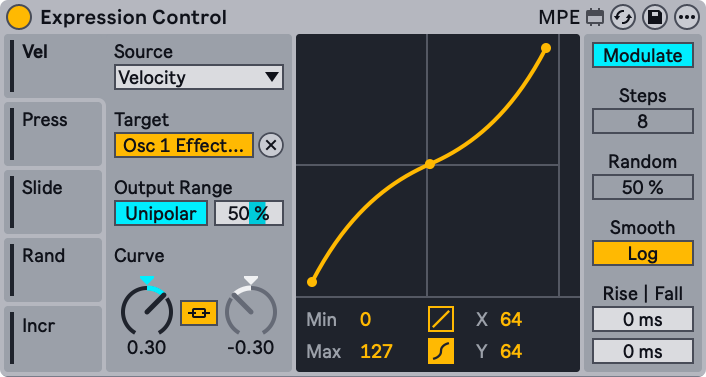
Expression Control is a modulator device that controls mapped parameters using different MIDI and MPE sources.
There are five Mod Source tabs, each of which can be set to a specific MIDI or MPE source. Use the MIDI Input Source drop-down menu to select one of ten expression parameters: Velocity, Modwheel, Pitchbend, Pressure, Keytrack, Expression, Random, Increment, Slide, and Sustain.
You can map any automatable parameter in Live to the selected modulation source, such as device or mixer parameters. To do so, activate the Map button and click a parameter to assign it as a mapping target.
The controls in the Output Range section depend on the Modulation toggle at the top right of the device. This toggle sets how Expression Control’s modulation values are generated, and has two modes: Modulate or Remote Control.
When Modulate is selected, base values of a mapped parameter can be adjusted using your cursor. In this mode, the value set or automated by Expression Control will be merged with the value being set as you tweak the parameter in question. When Remote Control is selected, modulated parameter values are set by Expression Control and interaction with base parameter values is no longer possible.
The Modulation toggle also affects Expression Control’s polarity modes. When Modulate is selected, a Modulation Polarity toggle in the Output Range section lets you choose between bipolar and unipolar modes. In Bipolar mode, modulation is centered around the base parameter value being modulated. In Unipolar mode, modulation is added to the base parameter value being modulated. The Output Range Max slider sets the output modulation value generated when the input signal is at its maximum amplitude. When Remote Control is selected, the Output Range section lets you set minimum and maximum output modulation values using the Output Range Min and Output Range Max sliders.
The Curve Type buttons below the Curve Display can be used to select a linear or S-shaped curve. The type of curve selected determines which controls are available in the Curve section.
When a linear curve (with two breakpoints) is selected, the Curve A dial adjusts the modulation curve’s entire shape. When an S-shaped curve (with three breakpoints) is selected, the Curve A dial adjusts the curve’s upper segment shape and the Curve B dial adjusts its lower segment shape. When the Curve Link button is enabled, the curve’s upper and lower segments can be inversely adjusted using only the Curve A dial.
The Curve Display provides a visualization of the modulation curve being generated by the device. Minimum and maximum values for the curve can be set via the Min/Max sliders. When an S-shaped curve is selected, the middle breakpoint’s horizontal and vertical positions can be set via the X-Y sliders. Breakpoints and curve shape can also be adjusted by clicking and dragging the visualized curve directly in the display.
When Increment is selected as a modulation source in any MIDI Input Source drop-down menu, the Increment Steps slider is activated. This value defines how many note triggers are necessary to cycle through the device’s entire modulation range, and can be set to a value from 1 to 32 steps. Stopping transport will reset the count, so that the first note played when transport restarts will output the minimum modulation value that has been set.
When Random is selected as a modulation source in any MIDI Input Source drop-down menu, the Random Amount slider is activated. This slider sets how much random deviation is applied to the target modulation value with each note trigger.
The Smoothing Type toggle lets you choose between linear or logarithmic smoothing between modulation values.
The Smoothing Rise and Fall sliders set the amount of time it takes for increasing and decreasing modulation values to reach the most recent value, from 0 to 1000 milliseconds.
32.3.3 MIDI Monitor
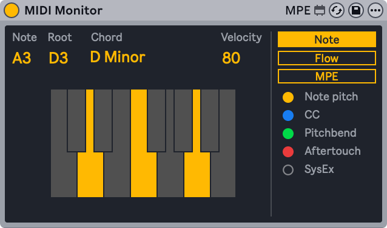
MIDI Monitor is a utility MIDI device that displays incoming MIDI and MPE data.
MIDI data can be viewed in either the Note display or Flow diagram.
In the Note display, incoming MIDI notes are shown along with their root note and related chords (if played) on a keyboard layout. Note velocity is also shown.
The Flow diagram populates a list of incoming MIDI notes and data (such as pitch bend and aftertouch messages) in a continuous stream as notes are played. The Freeze toggle can be used to freeze or unfreeze the display, while the Clear button clears the entire display.
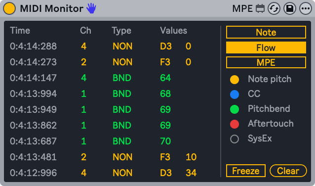
MPE data can be viewed in the MPE display. Incoming note, velocity, slide, pressure and per-note pitch data are shown in a continuous stream as notes are played.
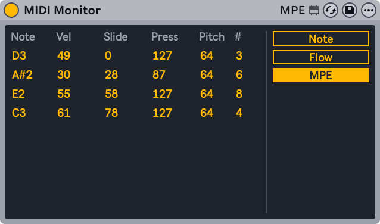
32.3.4 MPE Control
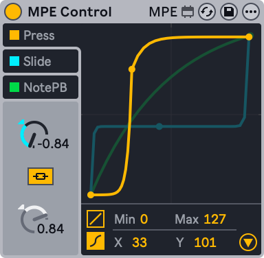
MPE Control is a Max for Live MIDI effect that allows shaping and transforming incoming MPE (MIDI Polyphonic Expression) signals, and offers distinctive adjustment options for each MPE data source. It is typically used in conjunction with another device to fine-tune the effect MPE data has on mapped parameters. MPE Control also allows converting MPE signals to global MIDI, making it possible to use an MPE controller with non-MPE enabled instruments.
Before we get into the details of how you can use the MPE Control effect to shape the incoming MPE data, let’s have a look at the difference between MPE and standard MIDI messages. MPE enables MIDI Control Change (or MIDI CC) messages to be sent on a per-note basis, thus allowing you to articulate each note individually. Without MPE, those messages are sent globally, meaning that all notes are affected by the MIDI CC being used. For more detailed information on MPE check out the Editing MPE chapter.
While MPE already allows a lot more musical expression than standard MIDI data, MPE Control gives you the ability to shape the MPE signals to a greater extent using curves, making it possible to play even more expressively. Let’s say you are using the Expression Control device and mapped its Slide MIDI input to the Filter Freq knob in Operator. Any incoming MPE slide data will affect the filter frequency. You can then use MPE Control to fine-tune the signal further, so that only very high slide values will reach a high frequency cutoff.
In MPE Control, the incoming MPE signals can be transformed via two types of curves that can be smoothed for consistent rise and fall times. There are three signal sources available: Press (pressure), Slide, as well as NotePB (per-note pitch bend), and each can be adjusted individually.
The curve of the selected MPE source is shown in the foreground of the display, making that curve and its respective controls available for editing. By default, all MPE sources are switched on, but they can be deactivated separately by clicking on the toggles next to their names.
For each MPE source, you can choose between two types of curve settings in the bottom left corner of the display: linear or S-shaped. The linear curve has two breakpoints, while the S-shaped curve has three breakpoints.
Choosing the linear setting lets you adjust the curve in two ways. You can use either the Curve control knob or click and drag the curve directly in the display. In addition to adjusting the curve, you can also modify the minimum and maximum values using the Min and Max sliders, or by dragging the breakpoints at the ends of the curve.
The linear setting provides one curve, creating a smooth ramp for the chosen modulation source, either “compressing” the data, making it easier to stay in the lower range of values, or “expanding” it, making it easier to reach higher values with less input.
When choosing the S-shaped curve, a third breakpoint is added to the middle of the curve’s line, separating the curve into two distinct segments. This breakpoint is movable, allowing complete control over the crossover point between the two segments, giving you the possibility to create much more radical curves. The two segments are linked together by default. Toggling the Curve Link button separates the segments from each other, so that they can be individually compressed or expanded using the two independent Curve dials.
Note that the position of the breakpoint separating the two segments can be adjusted either by directly clicking and dragging the breakpoint, or by using the X-Y controls at the bottom of the display. The X-Y controls are only active when using the S-shaped curve.
Clicking on the triangular button in the bottom right of the visualization will unfold the advanced settings panel.
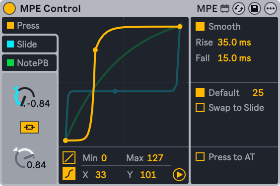
All of the three modulation sources include the Smooth toggle which enables smoothing for the currently selected source. Specific Rise and Fall values for each of the curves can be set independently via the respective controls, and additional controls are available depending on the source you are editing.
32.3.4.1 Press
The Press source can be used to alter MPE pressure data, which, similarly to polyphonic aftertouch, is sent on a per-note basis when pressure is applied to a controller’s key or pad after it was initially struck.
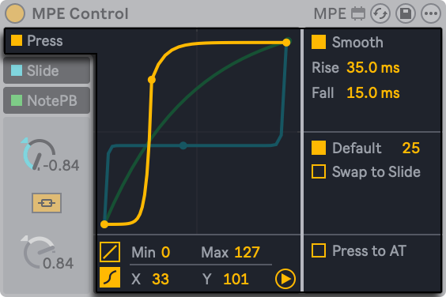
Press includes a Default toggle, which gives you the option to set a default MPE value to use with MIDI notes that do not contain MPE data. You can also choose to send the MPE pressure data to the Slide instead of the Press source by using the Swap to Slide toggle. This is useful when, for example, you want to adjust the modulation via the vertical axis, but are using a controller which only supports polyphonic aftertouch.
The Press to AT setting converts the MPE pressure data to monophonic aftertouch, so that non-MPE instruments can be modulated via an MPE controller.
32.3.4.2 Slide
The Slide source modifies MPE slide data (transmitted as MIDI CC 74), which corresponds to the vertical position of the finger on the controller key or pad.
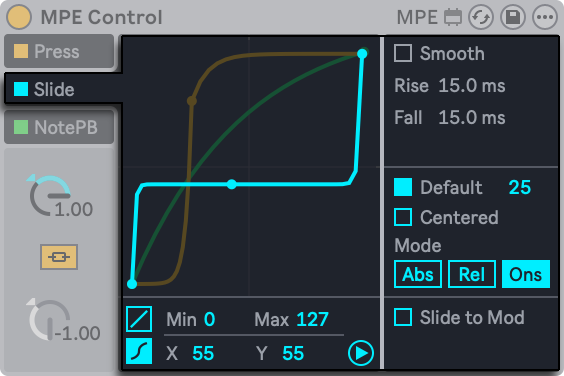
Slide also includes a Default toggle for use with non-MPE data, as well as a Centered switch which is useful when playing pad-based MPE controllers. When Centered is switched on, MPE slide data is transformed so that hitting the center of the pad generates a modulation value of zero, and the modulation value increases progressively as the finger slides away from the center alongside the vertical axis.
By default, Slide is set to Abs mode, which means that MPE slide values are interpreted as absolute. Switching the mode to Rel (relative) will set the slide values to start in the middle of the range, regardless of where the finger is on the key or pad. They can then only be modified by further sweeping the finger up and down while holding a note. In the Ons (onset) mode, MPE slide values will only be updated with a Note On. Note that onset mode will automatically deactivate smoothing.
The Slide to Mod option transforms MPE slide messages to Mod Wheel (CC1) messages, allowing to modulate non-MPE enabled instruments with an MPE controller.
32.3.4.3 NotePB
The NotePB source modifies the MPE per-note pitch bend data, which is produced by horizontal movement on the controller’s keys or pads. Pitch bend by definition only affects the pitch or pitches being produced.
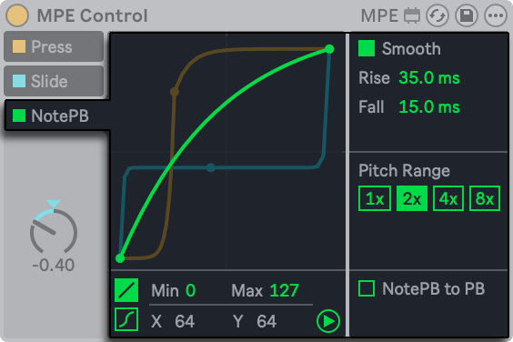
In the NotePB advanced settings, you can adjust the Pitch Range, which is useful in cases where the hardware controller and the instrument’s pitch bend range do not match. For example, a setting of 2x allows mapping an MPE controller with a +/- 48 semitone pitch bend range to an instrument whose pitch bend range is +/- 24 semitones. If the Note Pitch Bend MIDI CC is mapped to anything other than pitch, using higher values helps to cover a larger modulation range with a smaller movement.
When the NotePB to PB switch is switched on, MPE per-note pitch bend messages are translated to standard MIDI messages, which makes it possible for MPE-enabled MIDI controllers to still send MIDI information to instruments that do not receive MPE messages.
32.3.5 Note Echo
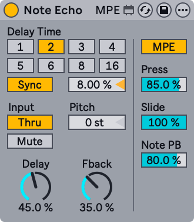
Note Echo is an echo delay effect that creates additional MIDI notes at specific time intervals with decreasing velocity.
Activate the Sync switch, which allows using the Delay Time beat division chooser. The numbered switches represent time delay in 16th notes. For example, selecting ”4” delays the signal by four 16th notes, which equals one beat (a quarter note) of delay.
Changing the Delay Time field percentage value shortens and extends delay times by fractional amounts, thus producing the ”swing” type of timing effect found in drum machines.
If the Sync switch is off, the delay time reverts to milliseconds. To edit the delay time, click and drag the Delay Time slider up or down, or click in the field and type in a value.
The Input switches lets you toggle between Thru/Mute playback modes. When Thru is active, both the MIDI note and echo are played back. When Mute is active, the MIDI note is muted and only the echo is audible.
Pitch sets the transposition amount applied to the note with each repeat of the echo.
Delay sets the amount of velocity applied to the echo. The Fback parameter defines how much of the channel’s output signal feeds back into the delay line’s input.
Switching on the MPE toggle allows incoming MPE data to be echoed alongside MIDI notes and velocity data. Otherwise, MPE data is filtered out.
With the MPE toggle switched on, the Press, Slide, and Note PB sliders become active and define the feedback amount for the pressure, slide and per-note pitch bend data respectively. Setting the feedback amount to lower than 100% will cause the echoed MPE data to progressively decay with each repetition.
32.3.6 Shaper MIDI
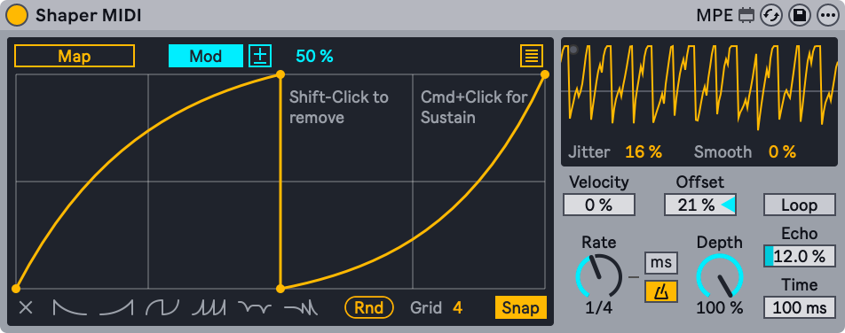
Shaper MIDI is a modulator device that uses a breakpoint envelope to generate mappable modulation data. Unlike the Shaper audio effect, Shaper MIDI’s envelope modulation is triggered with each MIDI note and can be affected by velocity.
You can map any automatable parameter in Live to Shaper MIDI, such as device or mixer parameters. To do so, activate the Map button and click a parameter to assign it as a mapping target.
Use the Show/Hide Multimap button at the top right of the display to access additional mapping buttons. You can map up to eight parameters in total.
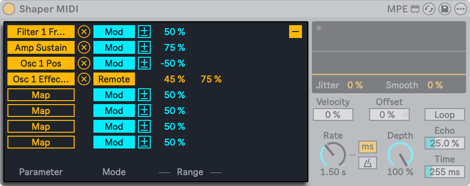
To unassign a parameter, click the Unmap button to the right of the Map button.
Shaper MIDI can control mapped parameters in two different ways: Modulation and Remote Control. Modulation is selected by default, but you can use the Mod toggle to switch to Remote Control.
When Modulation is enabled, parameter values can be freely adjusted even after they are mapped. The Modulation Polarity toggle switches between the Bipolar and Unipolar modes. In Bipolar mode, modulation occurs in both directions with the base value at the center. In Unipolar mode, modulation is applied in a single direction from the base value. Use the Modulation Amount slider to set the modulation depth. This determines the modulation range relative to the base value.
When Remote Control is enabled, parameter values are determined solely by Shaper MIDI and cannot be changed manually. Use the Min and Max sliders to scale the modulation range.
To create a breakpoint, click anywhere in the display. You can create a sustain breakpoint by holding Ctrl (Win) / Cmd (Mac) while clicking in the display. The sustain breakpoint is larger to distinguish it from the regular breakpoints in the display. Only one sustain breakpoint can be created per envelope. With a sustain breakpoint, the envelope remains at the sustain level for as long as a note is held.
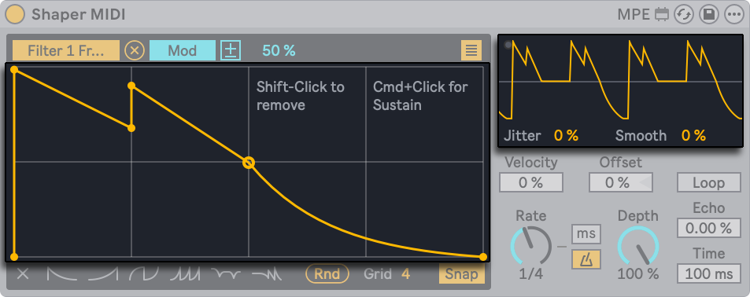
Hold the Alt (Win) / Option (Mac) key while dragging between breakpoints to create curved segments. Hold Shift and click a breakpoint to delete it.
To remove the entire envelope from the display, press the Clear button in the bottom left corner. To the right of the Clear button, you can choose from one of six presets to quickly create a new breakpoint envelope.
Use the Grid slider to adjust the number of grid divisions in the display. When Snap is enabled, any breakpoints that you create or reposition will automatically snap to the nearest grid line.
The smaller display at the top right of the device provides an oscilloscope-style view of the envelope’s output signal. The LED in the display flashes each time the envelope is triggered.
The Jitter slider adds randomness to the envelope output, while the Smooth control softens any sharp changes in the output, including those from applied jitter.
You can set how much velocity affects the modulation depth using the Velocity control. At 0%, velocity has no effect and the envelope output remains at a constant amplitude. At higher values, lower velocities scale the envelope output down to produce a more subtle modulation, while higher velocities scale the output up for a more noticeable effect.
The Offset control adjusts the center point of the envelope output. At 0%, the output is centered. Positive values shift the output upward, while negative values shift it downward. The horizontal line in the oscilloscope display indicates the center and can be a helpful visual reference when adjusting Offset.
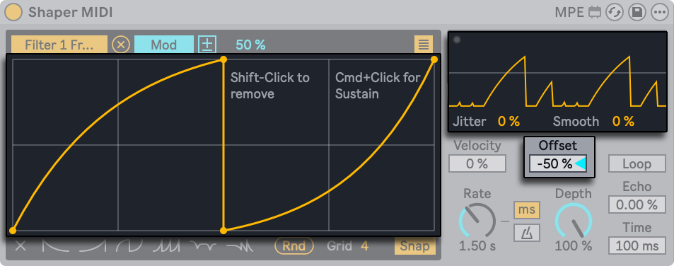
Activate the Loop toggle to repeat the envelope at the rate specified by the Rate control for as long as a MIDI note is held. When Loop is enabled, the sustain breakpoint level is bypassed.
The Rate control sets the envelope rate. Use the Time Mode toggles to switch between frequency values in Hertz and tempo-synced beat divisions.
Depth sets the amount of modulation for all mapped parameters. At 0%, no modulation is applied, while at 100% the envelope output is applied at its maximum level.
You can add echoes to the envelope output using Echo and Time. The Echo control defines how much of each echo is fed back into the next, which affects how long the echoes persist. Higher values produce more sustained repetitions. The Time control sets the interval at which the echoes occur.
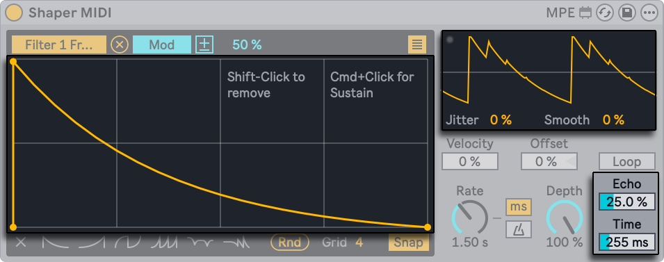